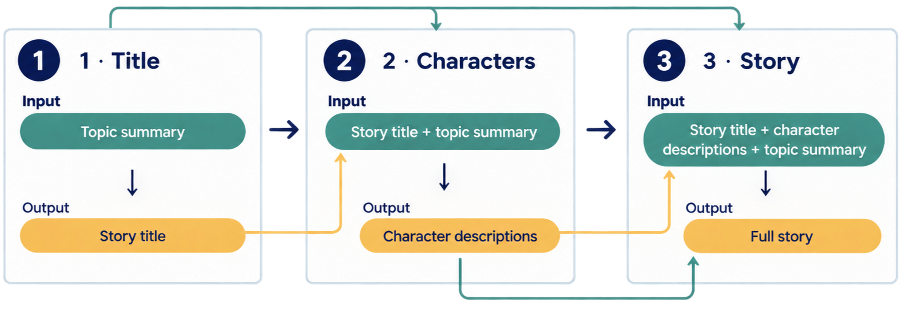

Remark
These lecture notes are in early access and will continue to evolve based on classroom experience and feedback.
7.3. Chains: Building Complex Workflows#
7.3.1. Learning objectives#
By the end of this section, you should be able to:
Explain why multi-step chains produce more reliable output than single monolithic prompts for complex tasks.
Implement a sequential chain using the modern
RunnableSequencepattern with the pipe operator (|).Explain the difference between the legacy
LLMChainapproach and the modernRunnableLambdaapproach.Trace data flow through a multi-step chain, identifying what each step receives and produces.
Apply the chain pattern to a multi-stage generation task and evaluate the quality improvement over a single-prompt approach.
7.3.2. Why Chain Multiple Prompts?#
Rather than putting everything into a single monolithic prompt, chains let you break complex tasks into focused, sequential steps:
Modularity — each step handles a specific sub-task; failures are easy to isolate
Reusability — individual steps can be recombined into different chains
Quality — focused prompts tend to produce better results than overloaded ones
Debuggability — intermediate outputs can be inspected at each step
The rule of thumb from Chapter 6 applies here: if your task contains more than two distinct sub-tasks, it benefits from decomposition into a chain.
7.3.3. A Three-Step Story Generation Pipeline#
To illustrate chains concretely, we build a three-step creative writing pipeline:
{kind=link}

Fig. 7.1 Data flow in a three-step sequential story generation chain. Step 1 generates a title from a topic summary; Step 2 generates character descriptions using the title and summary; Step 3 combines the title, character descriptions, and summary to output the full story.#
Each step is simpler and more reliable than asking the model to “write a complete story with characters based on this summary” in a single prompt.
7.3.4. Legacy LLMChain Approach#
The original LangChain [Chase, 2022] pattern uses LLMChain — a direct pairing of template and LLM:
Manual execution chains these steps together by passing the output of each step as input to the next:
Title: "Whispers Among the Pines: The Mountain Town's Secret Wolf Clan"
Character: The main character, Alex Carter, is a passionate and determined wildlife photographer with an innate ability to capture the raw beauty of nature. His compassion for animals drives him to explore uncharted territories, leading him to stumble upon a hidden family of wolves in a small mountain town. With his keen eye for detail and unwavering commitment to wildlife conservation, Alex embarks on an extraordinary journey that forever changes the way he views both the animal kingdom and humanity.
7.3.5. Modern Approach: RunnableSequence#
The modern LangChain approach uses RunnableLambda to compose pipelines cleanly, replacing LLMChain:
Title : "Shadows of the Sierras: The Unseen Family"
Character: The main character, Alex Carter, is a passionate and empathetic wildlife photographer whose life has revolved around capturing the untamed beauty of nature. With piercing blue eyes that reflect his deep connection to the wilderness, Alex possesses an infectious enthusiasm for animal conservation and a gentle soul that allows him to form unexpected bonds with creatures big and small. Despite his rugged exterior, he harbors a tender heart for those in need of protection or understanding, especially when it comes to their hidden family dynamics in the untamed wilds of the Sierras.
--- Story ---
In the shadows of the Sierras, Alex Carter's lens unveiled a sight few had witnessed—a pack of majestic wolves. Amidst whispers and legends, they roamed near Sierra Vista, their presence both feared and revered by its residents.
Their story began with Luna, an alpha female whose piercing gaze mirrored Alex's own blue eyes. She led her family through uncharted territories, protecting them from intruders while ensuring the survival of each member.
Through his lens, Alex captured their bond—the playful cubs chasing one another, the solemn father silently patrolling borders, and Luna's tender nurturing touch as she cared for her young. He found himself drawn to these wolves like a magnet, sensing an unspoken connection that transcended human-animal understanding.
Why prefer the modern approach:
The pipe operator (
|) makes data flow immediately readableEach
RunnableLambdaor template-LLM composition is independently testableEasier to add, remove, or reorder steps without refactoring
Compatible with LangChain’s streaming and async interfaces
7.3.6. Chain Patterns#
Beyond sequential chains, LangChain supports several structural patterns:
Pattern |
Structure |
Use case |
|---|---|---|
Sequential |
A → B → C |
Multi-stage generation, refinement |
Map-reduce |
[A, B, C] → merge |
Summarizing multiple documents |
Router |
input → (A or B or C) |
Routing queries to specialized sub-chains |
Parallel |
A ∥ B → merge |
Generating multiple perspectives simultaneously |
A simple parallel chain example — generating two perspectives on the same topic:
7.3.7. Exercises and discussion#
Chain quality comparison Implement both a single-prompt version and a three-step chain version of the story generation task. Run each on five different summaries and compare: coherence, character consistency, and adherence to the summary. At what point does the chain approach clearly outperform the single prompt?
Intermediate inspection Add logging to the story pipeline to print the output of each step before passing it to the next. For at least two runs, identify a case where the title or character description was poor quality. How did the poor intermediate output affect the final story? What would you change in that step’s prompt?
Parallel chain design Design a parallel chain that takes a scientific abstract and simultaneously generates: (a) a one-paragraph plain-language summary, (b) a list of key technical contributions, and (c) a list of potential limitations. Implement this using
RunnableParalleland evaluate whether the parallel outputs are consistent with each other.